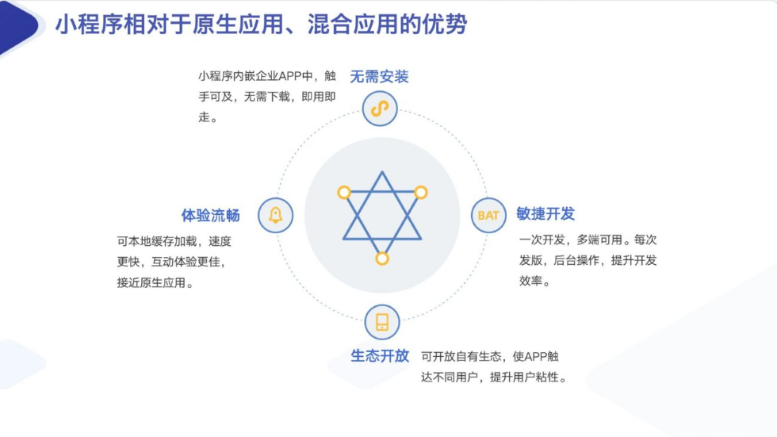
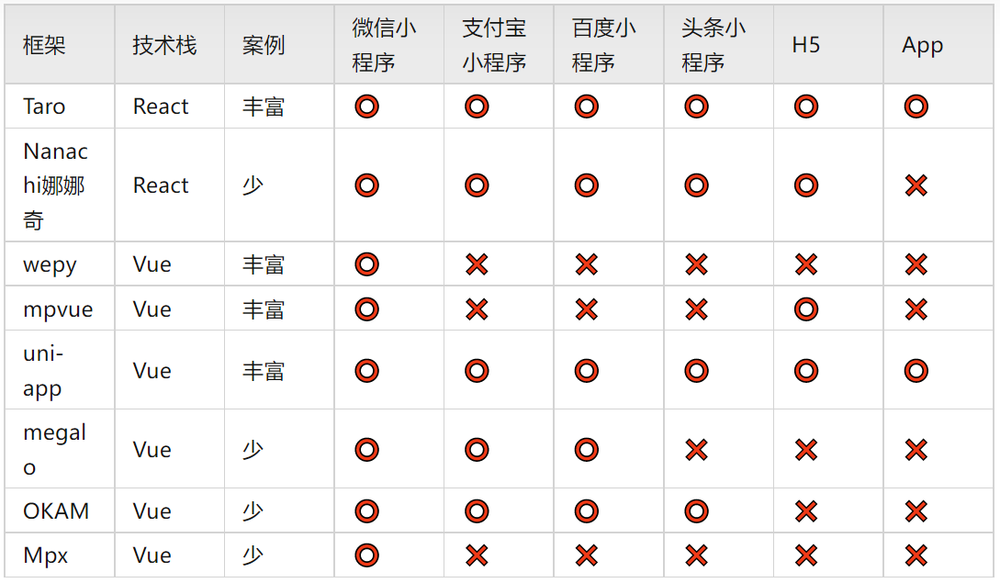
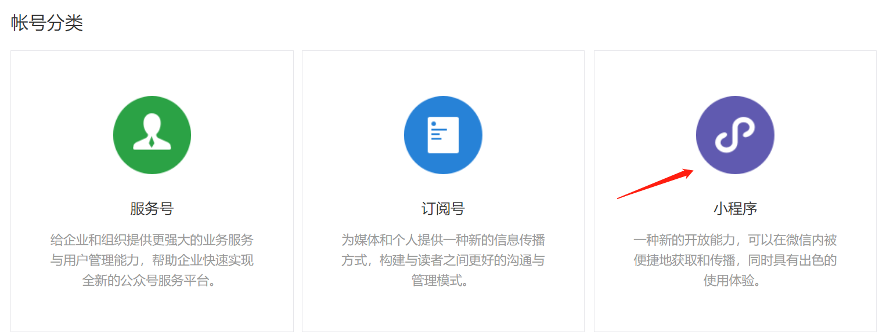
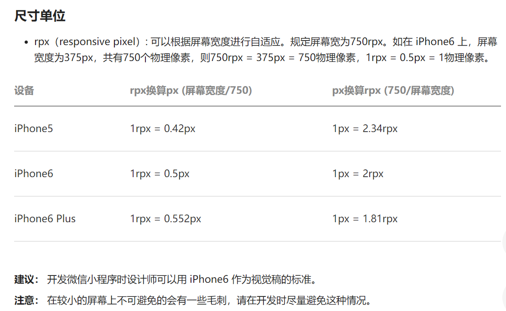
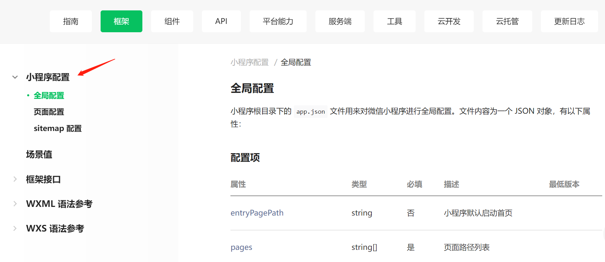
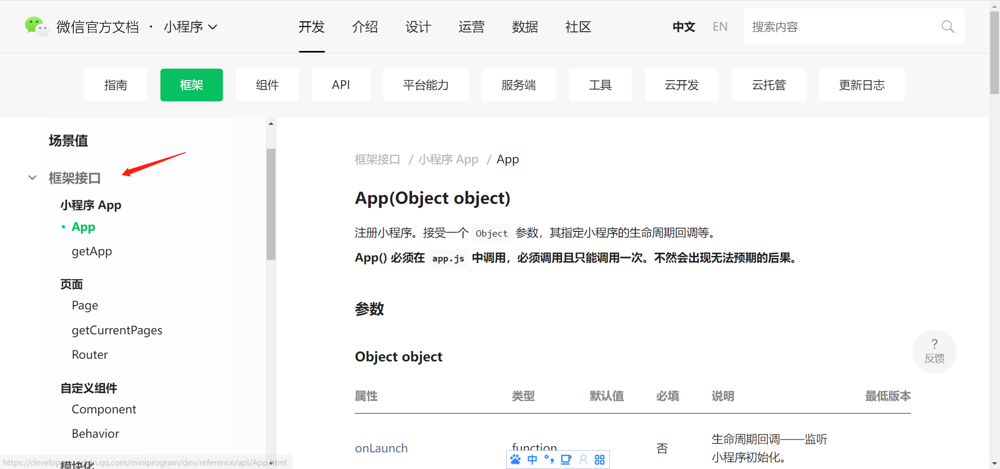

浅谈小程序
在 2016 年的「微信公开课 Pro」演讲中，微信事业群总裁张小龙这样描述了小程序的前景与未来：
" 小程序是一种不需要下载安装即可使用的应用，它实现了应用 “触手可及” 的梦想，用户扫一扫或者搜一下即可打开应用。也体现了 “用完即走” 的理念，用户不用关心是否安装太多应用的问题。应用将无处不在，随时可用，但又无须安装卸载 "。
小程序刚发布的时候要求压缩包的体积不能大于 1M，否则无法通过，在 2017 年 4 月做 了改进，由原来的 1M 提升到 2M；
2017 年 1 月 9 日 0 点，万众瞩目的微信第一批小程序正式低调上线。
而在 2020年的「WWDC 苹果全球开发者大会」中，轻应用则被作为 iOS 14 的主要功能进行强调与推介：
App Clip 就是一种无需用户在 iPhone 或 iPad 上安装完整的应用程序，就可以访问使用该应用程序的部分功能的轻量级应用，它们专注于处理简单快速的任务。
不论是张小龙对「微信小程序」略带文艺的描述，还是在 WWDC 上对于「轻应用」在 iOS 生态中的地位描述，我们都能大抵能理解小程序诞生的初衷。而如果我们把时间从这两场发布会的转至今日，却会发现小程序早已不再局限于「用完即走」与「快速打开」，各式各样的小程序已呈现百花齐放的状态，不论是工具小程序，内容小程序，交易小程序，直播小程序，各种类型应有尽有。
不妨让我尝试用自己的工作日常举例，早上出门上班，我会打开「天府健康通」扫描地铁场所码，并把健康码给地铁安检查看，临近中午11点 30分，我会用「美团」或「饿了么」为自己订一份工作餐，吃完午饭后我会打开「动物餐厅」看看小猫咪又赚了多少小鱼干，下午会议时使用「腾讯文档」查看会议纪要，快下班的时候用「叮咚买菜」购置晚饭所需的食材，晚上回家做饭时，用「懒饭 App」看看想吃的番茄肥牛饭怎么做。
时至今日，当我们说到小程序时，也不仅仅在特指微信小程序，各式各样的平台都纷纷推出了自己专属的小程序平台，不论支付宝、字节跳动、美团还是百度等其他互联网大厂，都纷纷推出了自己专属的小程序平台，且都基于自己的生态业务，为小程序提供流量进行支持，希望用户与开发者能够选择自有平台中的小程序进行开发。
随着小程序业务的愈演愈烈，越来越多的流量都被引入了互联网巨头的小程序战场中，但在这个过程中，对于战场中「封闭，不透明」的吐槽与争议也逐渐出现，无数企业都希望自己的应用中也能具备运行小程序的能力，希望能够借此抗争小程序被引入寡头所控制的战场，但「知易行难」，快速完成对小程序的底层与容器的研发，所需要花费的精力与时间并不是短时间就能够完成的。
事实上，小程序可以被理解为是「移动应用 App」的一个细分子集，如果按照「平等透明」的设想，小程序不应该仅仅存在于微信之中，那些我们并不经常使用的应用都可以通过小程序进行重新优化，我们可以通过各式各样的专门应用打开相关的小程序，从而对那些「太重的应用」进行减负操作。
当然了，小程序还会有这样一些特性需要我们注意：
- 小程序不具备「被关注」的能力，获取流量留存用户的操作需要由独立应用或其他渠道完成；
- 小程序不具备「推送消息与群发消息」的能力，对用户的信息触达与消息传递的操作需要由其他渠道完成；
- 小程序不具备「跨 App 分享 」的能力，因此对于小程序的分享与打开路径，需要在设计产品时提前思考，而不是把鸡蛋放在一个篮子里；
什么样的应用适合使用小程序开发
虽然小程序市场时至今日依然是一片蓝海，但我想也不是所有应用「都可以，都应该」使用小程序开发的。
基于我们的经验与积累来说，符合「逻辑简单，使用低频，对性能要求不极致」的应用场景，更加适合使用小程序进行研发。
逻辑简单：是指应用的操作逻辑并不十分复杂，各类生活服务（如打车，订餐，查地图与导航等等）都需要给用户提供简单清晰的操作逻辑，而这一类也天然的符合起初小程序「用完即走」的定义，因此十分符合使用小程序研发。一些逻辑复杂的应用场景想要通过小程序进行适配，就可能会面临更多的设计与研发困难，同时在性能和体验也可能会面对更多需要解决的问题。
使用低频：是指小程序的使用频率不应该太高，比如社交类的钉钉或飞书，金融类的掌上生活或浦大喜奔，媒体类的网易云音乐或斗鱼都不太适合使用小程序进行重新设计。对于用户使用的频率较高的应用来说，直接打开应用进行体验的步骤肯定最快的，此外由于某些行业的特殊性质（比如具备交易，支付等能力）要求，对于安全性与保密性的首选风险判断原则，也不宜使用常见的小程序进行设计。
对性能要求不极致：是指由于小程序始终存在于某个独立应用（也被称为宿主应用）中，考虑到目前的性能与研发所限制，暂时不太适合开发对于这两者有更高要求的移动应用。比如把原神，王者荣耀这样的游戏应用通过小程序进行重新设计，在目前来说肯定是不现实的。
当然，随着相关研发实力的增强与产业生态的逐渐补充，也有越来越多的「不可能」变为了「可能」，比如华西证券的「华彩人生」，浦发银行的「浦大喜奔」，某省的移动警务平台等客户都选择使用小程序容器方案进行落地实现
小程序与H5，原生应用有何区别？
很多朋友在了解小程序技术的时候，都会有这样的疑惑“到底与 H5，原生应用”这些技术相比，小程序具有哪些优势与劣势呢？
H5 移动应用
我们常说的 H5 其实也通常可以被视为一种 Web App，相比于我们在桌面端浏览器中打开的网页，主要是增加了一些响应式的设计与交互优化，从而使得这些网页更适合在移动端的浏览器中显示运行。既然是网页应用，那依然是基于 JavaScript，CSS 和 HTML 进行实现的，由于是基于各类前端技术栈进行实现，最大的好处就是快速、简单、方便，且有各种技术资料可以参考。
同样，H5 的缺点与优点也是并存的，比如由于技术已经很成熟了，对于前端经验欠缺的新人来说，面对各式各样的框架，模块、任务管理工具，UI 库可能会出现无从下手的问题；此外相比于原生应用，对于系统权限的获取（比如数据缓存能力，网络通信状态等）都显得比较鸡肋，当低性能的设备加载包含复杂逻辑的页面时，会出现明显的卡顿与延迟问题。
原生应用
原生应用也被叫做 Native App，相比于 H5 应用通过前端三大件进行实现不同，原生应用主要会采用 iOS 与 Android 的专有语言 Object-C（或 Swift），Java（或 Kotlin）进行实现，大多我们所常见的国民应用，比如微信，支付宝等都属于这种原生应用。
既然被叫做「原生应用」，就像操作系统的亲儿子一样，天然在性能与体验上具备优秀的潜质，也有组件库丰富，接口支持完善等各种优势特点。但原生应用最大的缺陷就是不能跨平台研发，以目前的主流市场为例，必须要支持 iOS 与 Android 两个主流平台。
混合应用
混合应用一般被称为 Hybrid App。简单来说，混合应用就是将原生功能封装成对应的 JS 接口，在前端使用 H5 来开发对应的 App （即 H5 作为内容+原生应用作为壳） ，看上去虽然是一个移动原生应用整体，但实际的页面还是网页，一套代码可以生成 iOS 与 Android 两种安装包，开发成本较低。
我们常见的淘宝，京东等应用由于更新与优化节奏都十分快速，为了更好的响应「贴近用户」的目标，应用中有的功能通过原生 Native 实现，有的功能则通过 H5 页面进行实现，这种应用就属于我们所说的混合应用。
小程序
严格意义上来说，小程序并不属于以上 3 种应用的任何一种。小程序主要通过 JavaScript 与 CSS 这种常见的前端技术进行开发，但又没有完全使用 HTML 进行实现，在不同的操作系统中，JavaScript 代码分别运行在 iOS 的 JavaScriptCore 与 Android 的 X5 JSCore 中，各家小程序平台或多或少都有一部分自研的核心，因此渲染视图层的组件也有所不同。

相比「 H5 移动应用」与「 移动原生应用」，小程序具备如下优势：
- 具备跨平台的能力，一套代码可以在 iOS 与 Android 两个平台中运行；
- 远超过 H5 的体验（支持本地缓存，Webview，有丰富的组件与支持库）；
- 能获取更多系统权限，完成更加丰富的产品设计；
- 可以避免 DOM 泄露（不使用常用的 window 对象与 document 对象）；
- 开发简单，上手成本低（比如 FinClip 提供了 FIDE 与开发文档）；
常见的小程序开发框架有哪些
以主要的小程序开发框架举例，腾讯云社区的「极乐君」将不同平台下小程序支持的力度整理在一张表中：

小程序开发环境
1、微信文档
2、微信开发工具下载
3、注册小程序账号

小程序特点
-
没有 DOM
-
组件化开发： 具备特定功能效果的代码集合
-
体积小，单个压缩包体积不能大于 2M，否则无法上线
-
小程序的四个重要的文件
- *.js
- *.wxml —> view 结构-----> html
- *.wxss —> view 样式 -----> css
- *. json ----> view 数据----- > json 文件
- 小程序适配方案: rpx (responsive pixel 响应式像素单位)
- 小程序适配单位： rpx
- 规定任何屏幕下宽度为 750rpx
- 小程序会根据屏幕的宽度不同自动计算rpx 值的大小
- Iphone6 下： 1rpx = 1 物理像素 = 0.5px

小程序配置
全局配置
作用： 用于为整个应用进行选项设置

页面配置
配图参上
作用：用于为指定的页面进行配置
注：页面配置的优先级高于全局配置
sitemap 配置
配图参上
作用：配置其小程序页面是否允许微信索引
框架接口

App
-
全局 app.js 中执行 App()
-
生成当前应用的实例对象
-
getApp()获取全局应用实例
Page
- 页面.js 中执行Page()
- 生成当前页面的实例
- 通过getCurrentPages() 获取页面实例
WXML语法
具体看官方文档 ~
WXS语法
具体看官方文档 ~
案例1
wxs.wxml
1 | <!-- 引入wxs文件 --> |
wxs.js
1 | Page({ |
search.wxs
1 | function search(list, keyWords) { |
dateFormat.wxs
1 | function dateFormat(time) { |